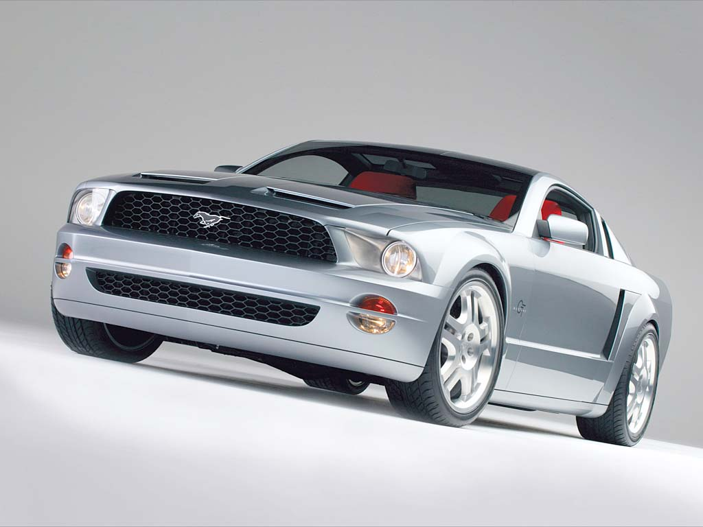

|  | Koncepcje Mustang GT są natychmiast rozpoznawalne jako Mustangi, a mimo to rozciągają projekt daleko w przyszłość z wyraźnie nowoczesnym wyglądem. Podobnie jak koncepcja Mustang 1, koncepcje GT to dwupunktowe samochody sportowe: jedna coupe, a druga kabriolet. Oba samochody zaczęły się od znacznie zmodyfikowanej architektury Ford Thunderbird z napędem na tylne koła. |